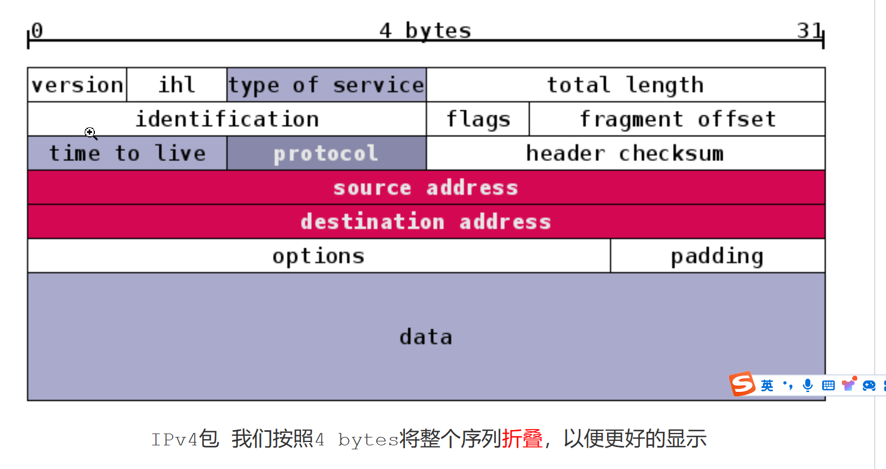
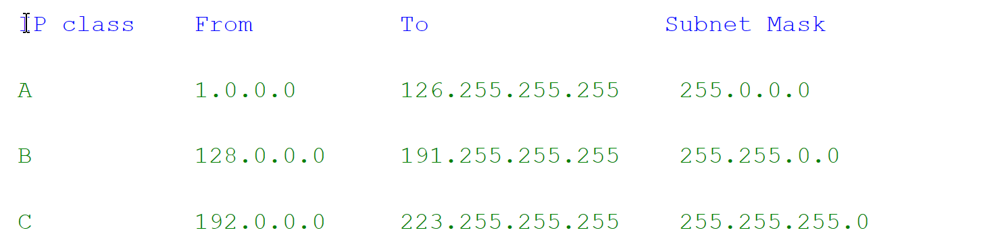
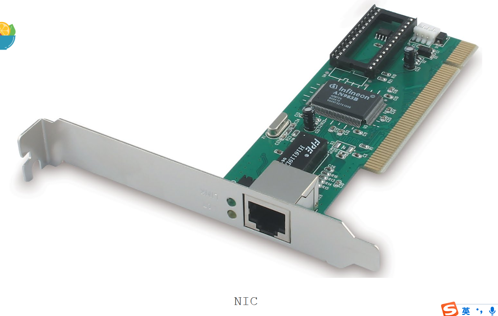
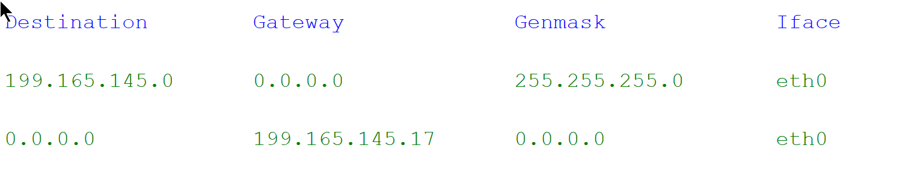
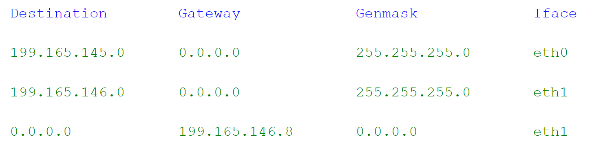
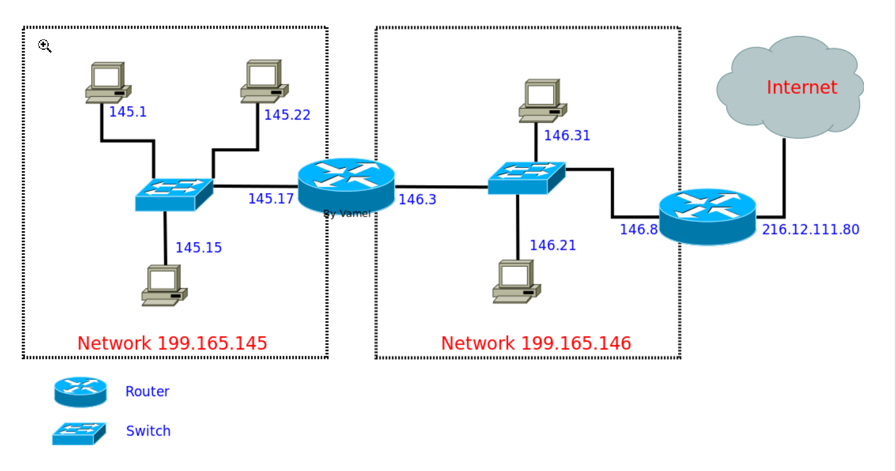

网络层(network layer)是实现互联网的最重要的一层。正是在网络层面上，各个局域网根据IP协议相互连接，最终构成覆盖全球的Internet。更高层的协议，无论是TCP还是UDP，必须通过网络层的IP数据包(datagram)来传递信息。
IP数据包是符合IP协议的信息，我们后面简称IP数据包为IP包。IP包分为头部(header)和数据(Data)两部分。数据部分是要传送的信息，头部是为了能够实现传输而附加的信息。
IPv4格式

其中source address 和 destination address部分是IPv4的地址。 IP地址是全球地址，它可以识别局域网和主机。每个IPv4地址的32位分为前后两部分，第一部分用来区分局域网，第二个部分用来区分该局域网的主机。子网掩码(Subnet Mask)告诉我们这两部分的分界线，比如255.0.0.0表示前8位用于区分局域网，后24位用于区分主机。 IP地址被分为A、B、C三类，如下：
网卡
事实上，IP地址是关联的网卡(NIC, Network Interface Card)的地址，一台计算机可以有不只一个网卡，比如笔记本就有一个以太网卡和一个WiFi网卡。计算机在接收或者发送信息的时候，要先决定想要通过哪个网卡。

路由器(router)
路由器(router)实际上就是一台配备有多个网卡的专用电脑。它让网卡接入到不同的局域网中，实现信息的跨局域网传输。
路由
IP包的跨局域网传输需要通过路由器的接力。每一个主机和路由器中都存有一个路由表(routing table)。路由表根据目的地的IP地址，规定了等待发送的IP包所应该走的路线。
假设我们主机的路由表如下啊

Genmask为子网掩码,Iface用于说明使用哪个网卡接口,Gateway为网关，也就是路由器第一行表示，如果IP目的地是属于199.165.145.0这个网络，那么只需要自己在eth0上的网卡直接传送，不需要前往router(Gateway 0.0.0.0 )。
第二行表示所有不符合第一行的IP目的地，都应该送往Gateway 199.165.145.17，也就是路由器所在的地址
如果IP包目的地为199.165.146.21，不符合第一行，所以按照第二行，发送到中间的router。协议栈会将IP包放入帧的payload，并在帧的头部写上199.165.145.17对应的MAC地址，这样，就可以通过链路层将该帧传送到路由器了
中间的router在收到IP包之后(实际上是收到以太协议的帧，然后从帧中的payload读取IP包)，提取目的地IP地址，然后对照自己的routing table：

从前两行我们看到，由于该router横跨eth0和eth1两个网络，它可以直接通过eth0和eth1这两个网卡直接传送IP包到目的主机
第三行表示，如果是前面两行之外的IP地址，则需要通过eth1，送往199.165.146.8，另一个router，也就是下一跳路由
我们的目的地符合第二行，所以将IP包放入一个新的帧中，在帧的头部写上199.165.146.21的MAC地址，直接发往主机146.21。
这个网络拓扑如下

IP包的路由过程，根据沿途路由器的routing table指导，在router间接力。IP包最终到达某个router，这个router与目标主机位于一个局域网中，可以直接建立连接层的通信。最后，IP包被送到目标主机。这样一个过程叫做routing 整个过程中，IP包不断被主机和路由封装入帧并拆开，然后借助连接层，在局域网的各个NIC之间传送帧。整个过程中，我们的IP包的内容保持完整，没有发生变化(部分头部字段有变，数据部分不变)。最终的效果是一个IP包从一个主机传送到另一个主机。利用IP包，我们不需要去操心底层(比如连接层)发生了什么。
(在Linux下，可以使用$route -n来查看routing table)
ARP协议
在上面的过程中，我们实际上假设了，每一台主机和路由器都能了解局域网内的IP地址和MAC地址的对应关系，这是实现IP包封装(encapsulation)到帧的基本条件。IP地址与MAC地址的对应是通过ARP协议传播到局域网的每个主机和路由器。每一台主机或路由器中都有一个ARP cache，用以存储局域网内IP地址和MAC地址如何对应。
ARP协议(ARP介于连接层和网络层之间，ARP包需要包裹在一个帧中)的工作方式如下： 主机会发出一个ARP包，该ARP包中包含有自己的IP地址和MAC地址。通过ARP包，主机以广播的形式询问局域网上所有的主机和路由器：我是IP地址xxxx，我的MAC地址是xxxx，有人知道199.165.146.4的MAC地址吗？拥有该IP地址的主机/路由器会回复发出请求的主机：哦，我知道，这个IP地址属于我的一个NIC，它的MAC地址是xxxxxx。由于发送ARP请求的主机采取的是广播形式，并附带有自己的IP地址和MAC地址，其他的主机和路由器会同时检查自己的ARP cache，如果不符合，则更新自己的ARP cache。
这样，经过几次ARP请求之后，ARP cache会达到稳定。如果局域网上设备发生变动，ARP会重复上面过程。
(在Linux下，可以使用$arp命令来查看ARP cache。ARP协议只用于IPv4。IPv6使用Neighbor Discovery Protocol来替代ARP的功能。)
Routing Table的生成
我们还有另一个假设，就是每个主机和路由上都已经有了合理的routing table。这个routing table描述了网络的拓扑(topology)结构。如果你了解自己的网络连接，可以手写自己主机的routing table。但是，一个路由器可能有多个网卡，所以routing table可能会很长。更重要的是，周围连接的其他路由器可能发生变动(比如新增路由器或者路由器坏掉)。我们需要routing table能及时将信息导向正确的合理的路径。我们需要一种智能的方法探测周围的网络拓扑结构，并自动生成routing table。
一种用来生成routing table的协议是RIP(Routing Information Protocol)。它通过距离来决定routing路径，所以属于distance-vector protocol。对于RIP来说，所谓的距离是从出发地到目的地途径的路由器数目(hop number)。 我们最初可以手动生成某个路由器的routing table。随后，根据RIP协议，该路由器向周围的路由器和主机广播自己前往各个IP的距离(比如到IP1=0，IP2=0，IP3=1，IP4=1，IP5=2)。收到RIP包的路由器和主机根据RIP包和自己到发送RIP包的路由器的距离，算出自己前往各个IP的距离。比如收到RIP包的路由器与发送RIP包路由器的距离为1，则收到RIP包的路由器通过发送RIP包的路由器到达IP3的距离则为2。如果收到RIP包的路由器的路由表中本身有对应IP的记录，并且自己的记录比这个远,那么更新自己的routing table.如果自身的RIP记录并不差，那么保持对应记录不变。 上述过程在各个点不断重复RIP广播/计算距离/更新routing table，最终所有的主机和路由器都能生成最合理的路径(merge)。
(RIP的基本逻辑是：如果A距离B为6，而我距离A为1，那么我途径A到B的距离为7)
RIP出于技术上的原因(looping hops)，认为距离超过15的IP不可到达。所以RIP更多用于全球互联网的一部分(比如整个中国电信的网络)。这样一个互联网的一部分往往属于同一个ISP或者有同一个管理机构，所以叫做自治系统(AS,autonomous system)。自治系统内部的主机和路由根据通向外部的边界路由器来和其它的自治系统通信。各个边界路由器之间通过BGP(Border Gateway Protocol)来生成自己前往其它AS的routing table，而自治系统内部则参照边界路由器，使用RIP来决定routing table。BGP的基本工作过程与RIP类似，但在考虑距离的同时，也权衡比如政策、连接性能等其他因素，再决定信息的走向
总述
ARP让每台电脑和路由器知道自己局域网内IP地址和MAC地址的对应关系，从而顺利实现IP包到帧的封装。 RIP协议可以生成自治系统内部合理的routing table。BGP协议可以生成自治系统外部的routing table。 最后IP包根据routing table进行传输